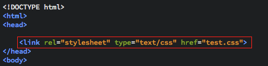
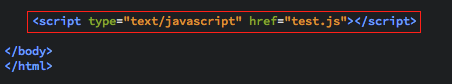

Link tags are used to add external files to your document. They are mostly used to link style sheets, but can also be used to link JavaScript documents as well; we will come onto this later. Script tags look like <script></script> but are useless without attributes.
To link a JavaScript file you will have to add something like this <script rel="stylesheet" type="text/css" href="style.css"></script> to the bottom of your html code body, just above the closing body tag (shown below).
To link a style sheet, you will have to add something like this <link rel="stylesheet" type="text/css" href="style.css">. This will add a stylesheet called style.css and the whole link tag should be placed somewhere within the head tag (shown below). Note there is no need for a closing </link> tag.
You can also link to a fragment of the current document. This is done using the id attribute. For example, <h4 id="sect1">Section 1</h4> will produce:
Then you want to create a link that will take you to that section, something like this <a href="#sect1">Go to section 1</a> will produce:
Go to section 1, a simple link on the page that when clicked will take you to the referenced location. An example of this is at the bottom of the page. The 'Top' button uses this very method (along with some JavaScript to smooth the transition) to focus the browser back to the top of the page.
<img> tags are used to add images to your document. They use the src attribute, which takes the file name or url of the image as a parameter. I have used this tag to add the two images above this paragraph to this page.
The exact code for that is:
<img src="example-script.png">, as the image name for the bottom picture was 'example-script.png'.